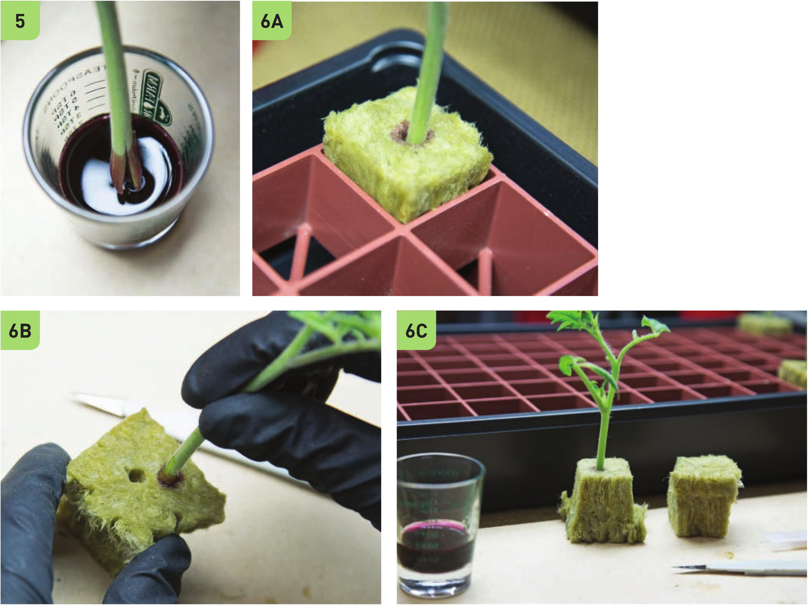

3 Always wear gloves when working with rooting hormone. 4 Pour some of the rooting solution into a separate container to avoid potentially contaminating the entire bottle. 5 Dip the end of the cutting into the rooting hormone, and let any excess rooting solution drip off before moving the cutting to the cube. 6 The cutting can be positioned in the cube in several ways: A. The standard method is to insert the cutting into the cube about 1" deep through the pre-dibbled hole. B. Another option is creating a smaller dibble hole so the cutting fits more snugly into the hole. This is beneficial when using thin cuttings because it increases the amount of contact between the stem and the stone wool. C. Another option is to insert the cutting into the bottom of the stone wool cube. This has similar benefits to the previous option plus it has a wider bottom, making it possible to place individual cubes in a tray without a holder. 144 DIY HYDROPONIC GARDENS
